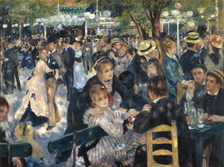

Charles D. Tarlton
Northampton, Massachusetts, USA
Renoir's Bal du Moulin de la Galette (1876)

O body swayed to music, O brightening glance,
How can we know the dancer from the dance?
—William Butler Yeats Ambivalence says two things at once. Take a photograph of these painted dancers at the dance. They look the same at first, and then not at all; and logically behind them imaginary dancers in his head.
close-up on the eyes
two chatting girls, dots of blue
in each black cyclone
their skin threaded, woven strings
of raw canvas showing through
Dancing, talking, drinking, and eating the large sweet Breton breads, looking around in all directions, so mild are the looks, so calm for so seductive.
in painted frenzy
you can smell heat from bodies
dancing toward
passion in the bal-musette,
coitus on the vielle à roué The weight of paint pulls your eye down into the lower right where the closer-up, more-driven couples talk and feel each other out. Out on the dance floor and to the upper left they dance more intently; touching's the thing. They have something in mind.
they say he doted
on hats, what was fashionable
painted his friends in
stood the actual canvas up
in the café to paint it
Author's Note: Pierre-Auguste Renoir's Bal du Moulin de la Galette is an oil on canvas, 131 x 175 cm (Musée d'Orsay); in the public domain. |